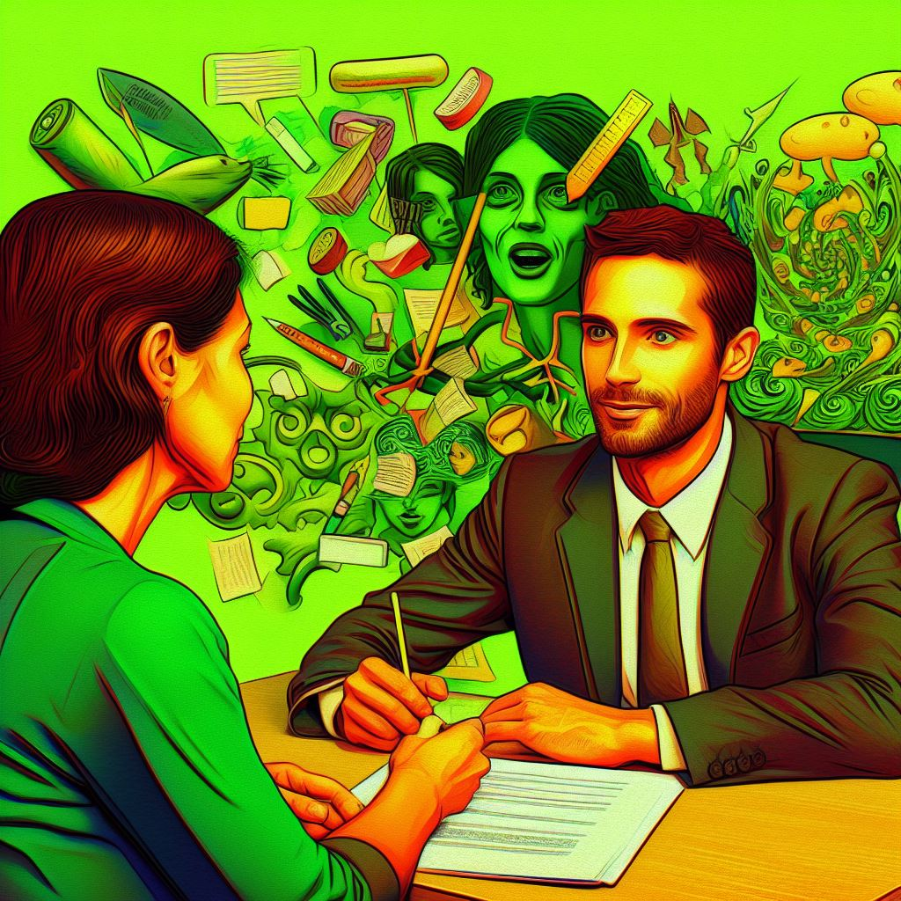
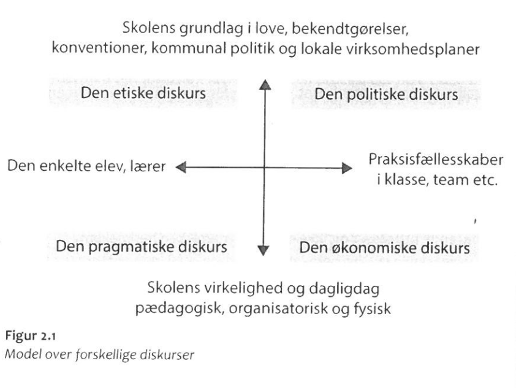
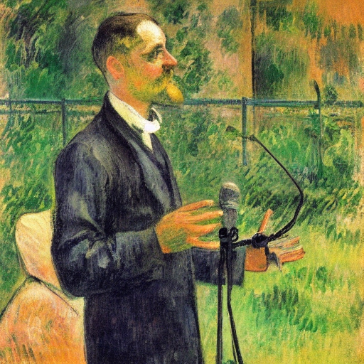

Interview dokumentation
Her er en samling af dokumentationen fra interviewet, formål, hovedpointer og konklusion

Formål med interviewet
At få indsigt i lærerens perspektiver og erfaringer i forhold til inklusion og eksklusion i en specialklasse.
Hvem?
Morten Henssel
Han er lærer i en special klasse på Kildegaardsskolen i Herlev.
Eleverne i klassen
Eleverne i den pågældende klasse manifesterer en heterogen sammensætning, idet de repræsenterer en divergerende aldersstruktur fra såvel indskolings- som udskolingsniveauerne. Et fælles træk blandt disse elever er behovet for supplerende støtte og differentieret undervisning. Disse studerende præsenterer varierende baggrundsfaktorer, der legitimerer deres placering i den aktuelle klasse. Dog forenes de af et kollektivt mål om integration i en almen klasse på et tidspunkt i deres uddannelsesforløb.
Interview spørgsmål
1.
Kan du beskrive din baggrund og erfaring som lærer i specialundervisning? (spørg evt. Indtil overgang fra “almindelig” klasse til specialklasse efter)
2.
Hvordan definerer du begreberne "inklusion" og "eksklusion" i forhold til din undervisningssituation?
3.
Hvilke udfordringer og muligheder oplever du, når du arbejder med elever i specialklassen med fokus på inklusion?
4.
Hvordan tilpasser du undervisningen for at imødekomme individuelle behov i din specialklasse? Kan du give eksempler på vellykkede tilpasninger? Evt. En ikke vellykket tilpasning?
5.
Hvordan håndterer du de situationer, hvor inklusionen af enkelte elever kan være en udfordring for resten af klassen?
6.
samarbejder du med andre professionelle, såsom specialpædagoger eller terapeuter, for at støtte inklusion og eksklusion af elever i din specialklasse? Hvis ja, hvordan har du med de forskellige samarbejdspartnere?
7.
Hvordan håndterer ledelsen når der er udfordringer?
8.
inddrager du forældrene i beslutningsprocesser vedrørende inklusion og eksklusion? Hvis ja, hvordan håndterer du eventuelle bekymringer eller modstridende synspunkter?
9.
Kan du dele et eksemple på succes med inklusion initiativer eller situationer, hvor eksklusion har været nødvendig for at støtte elevernes trivsel og læring?
10.
Hvad er dine tanker om fremtidige udfordringer og muligheder for inklusion og eksklusion i specialundervisning?
11.
Hvordan ser du udviklingen inden for dette område generelt?

Hovedpointer
Inkluderende Børnesyn
Holdet arbejder nu ud fra et inkluderende børnesyn, der sigter mod at skabe et miljø, hvor alle børn trives bedst muligt.
Afskærmning for Individuel Støtte
Der implementeres en praksis med afskærmning, hvor et dedikeret område er reserveret til individuel støtte. Andre børn har ikke adgang til dette "kontor" for at sikre fokus og støtte til dem, der har brug for det. Ved at anvende denne tilgang stræber institutionen efter at sikre, at børnene kan integreres fuldt ud i folkeskolen, selvom de af forskellige årsager ikke har kunnet deltage i en standardklasse. Årsager til Eksklusion: Børnene er blevet henvist til denne særlige støtte på grund af forskellige årsager, der har gjort det vanskeligt for dem at fungere i en almindelig klasse.
Eksklusion
Børnene har ikke kunne være i en standard klasse af forskellige grunde eksklusion : i standard klasse, ofte mange forhold som gør at man kan ekskludere mange elever uden man ved det. Man kan misse mange elever i fællesskabet og undervisningen. Mange elever tør ikke sige op hvis de ikke forstår opgaven, man mister elever på denne måde. frikvarteret , nogle kan ikke lege under forhold som trives dem, eksluderende uden for lokalet.
Medbestemmelse
Vi kan sidde med eleverne, har tid og mulighed, eleverne vælger selv hvornår de vil arbejde med tingene, hvis de vil have mat om morgen så starter de med det,på den måde har eleverne eget ansvar for læring og selvbestemmelse, hvilket nemt kan blive glemt i en almen klasse, på den måde er der mere tid noget af det vigtigste.
Fremtiden
Synes at mange af de elementer man arbejder med i specialområdet skal med i almen område i forhold til at det gavner rigtig meget for de elever. Kan næsten garantere at det vil gavne 20 elever i almenområdet. Børn trives i vante områder. Der er mange relationer og andre faktorer som kan påvirke eleven.
Den femte diskurs

Konklusion
Konklusionen understreger betydningen af at anerkende, at alle børn lærer på forskellige måder. For at etablere et sandt
inkluderende læringsmiljø er det nødvendigt at skabe plads til både fællesskabet og de individuelle
behov, især for børn med særlige behov. Dette kræver en differentieret tilgang, hvor undervisningen
tilpasses for at imødekomme mangfoldigheden i klassen. Ved at give opmærksomhed til både det
kollektive læringsmiljø og de unikke krav, som hvert barn bringer med sig, kan vi skabe en inkluderende
undervisning, der fremmer alles trivsel og udvikling. Denne helhedsorienterede tilgang reflekterer
vigtigheden af at skabe en læringskontekst, der er rummelig, respektfuld og opmærksom på de individuelle
styrker og udfordringer, som hvert barn bringer med sig til klasseværelset.
Alle børn lærer forskelligt
Der mangler værktøjer
Implementér specialundervisnings værktøjer til almen
Media Produkt
Vi har lavet en kort video af zoom interviewet hvor vi har valgt nogle af gode Mortens reflektioner og highlightet dem.
Zoom video klip
I klippet deler Morten indsigtsfulde tanker som speciallærer, udfordringer og triumfer i hans daglige arbejde. Hans dedikation
og lidenskab for at støtte elever med forskellige behov skinner tydeligt igennem, og vi får et
indblik i de metoder, der har vist sig mest effektive i hans undervisning.
Zoom-interviewet giver seerne mulighed for at opleve øjeblikke af refleksion, inspiration og
en dybere forståelse af specialundervisningens kompleksitet. Morten Henssels erfaringer og indsigter
kan potentielt være en kilde til inspiration for alle, der er involveret i undervisning og støtte
til elever med særlige behov.
Vi håber, at dette klip bringer værdifulde perspektiver og indsigter til vores seere og bidrager
til dialogen om inklusion og specialundervisning i uddannelsessystemet.